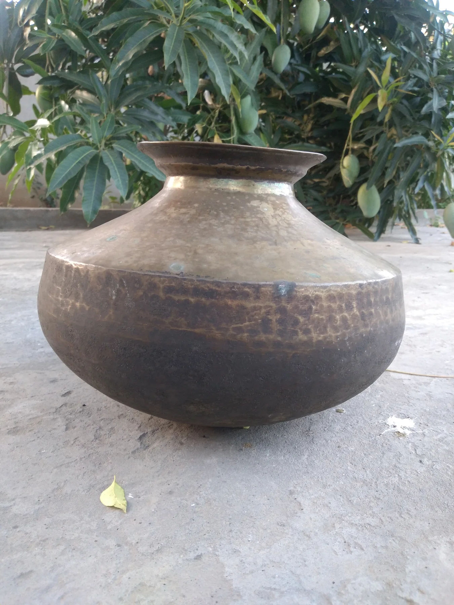

OBJECT ARCHIVE · ਵਿਰਾਸਤੀ ਵਸਤੂ

An object shaped by everyday knowledge.
The gaggar is documented among the traditional household objects represented at the Punjab Agricultural University Museum of Social History. Vessel shape, material and local naming can differ; this entry is an introductory reference rather than a claim that every Punjabi household used the same form.
ਗੱਗਰ ਪੰਜਾਬ ਐਗਰੀਕਲਚਰਲ ਯੂਨੀਵਰਸਿਟੀ ਦੇ ਮਿਊਜ਼ੀਅਮ ਆਫ਼ ਸੋਸ਼ਲ ਹਿਸਟਰੀ ਵਿੱਚ ਦਰਸਾਈਆਂ ਰਵਾਇਤੀ ਘਰੇਲੂ ਵਸਤਾਂ ਵਿੱਚ ਸ਼ਾਮਲ ਹੈ। ਇਸ ਦੀ ਸ਼ਕਲ, ਸਮੱਗਰੀ ਅਤੇ ਸਥਾਨਕ ਨਾਂ ਵੱਖ ਹੋ ਸਕਦੇ ਹਨ। ਇਹ ਮੁੱਢਲੀ ਜਾਣਕਾਰੀ ਹੈ, ਹਰ ਘਰ ਵਿੱਚ ਇੱਕੋ ਜਿਹੀ ਵਸਤ ਵਰਤੇ ਜਾਣ ਦਾ ਦਾਅਵਾ ਨਹੀਂ।
Materials and making
Traditional examples include metal vessels; verify the specific object. Materials and construction may differ by locality and period; this description should be matched to a dated, photographed example before being treated as a complete technical specification.
ਰਵਾਇਤੀ ਉਦਾਹਰਨਾਂ ਵਿੱਚ ਧਾਤ ਦੇ ਭਾਂਡੇ ਮਿਲਦੇ ਹਨ; ਖਾਸ ਵਸਤ ਦੀ ਪੁਸ਼ਟੀ ਕਰੋ। ਸਮੱਗਰੀ ਅਤੇ ਬਣਤਰ ਇਲਾਕੇ ਤੇ ਸਮੇਂ ਅਨੁਸਾਰ ਬਦਲ ਸਕਦੀ ਹੈ। ਪੂਰੀ ਤਕਨੀਕੀ ਜਾਣਕਾਰੀ ਮੰਨਣ ਤੋਂ ਪਹਿਲਾਂ ਮਿਤੀ ਵਾਲੀ ਅਸਲ ਤਸਵੀਰ ਅਤੇ ਸਥਾਨਕ ਉਦਾਹਰਨ ਨਾਲ ਇਸ ਦੀ ਪੁਸ਼ਟੀ ਕਰਨੀ ਚਾਹੀਦੀ ਹੈ।
Traditional use
Carrying, serving or storing water, depending on the vessel form.
ਭਾਂਡੇ ਦੀ ਬਣਤਰ ਅਨੁਸਾਰ ਪਾਣੀ ਭਰਨਾ, ਪਰੋਸਣਾ ਜਾਂ ਸੰਭਾਲਣਾ।
ਰਿਕਾਰਡ ਦੀ ਸਥਿਤੀ: ਇਸ ਵਸਤੂ ਦੇ ਇਲਾਕਾਈ ਨਾਂ, ਪਰਿਵਾਰਕ ਯਾਦਾਂ ਅਤੇ ਅਸਲ ਸਰੋਤ ਬਾਰੇ ਹੋਰ ਜਾਣਕਾਰੀ ਇਕੱਠੀ ਕੀਤੀ ਜਾਣੀ ਬਾਕੀ ਹੈ।